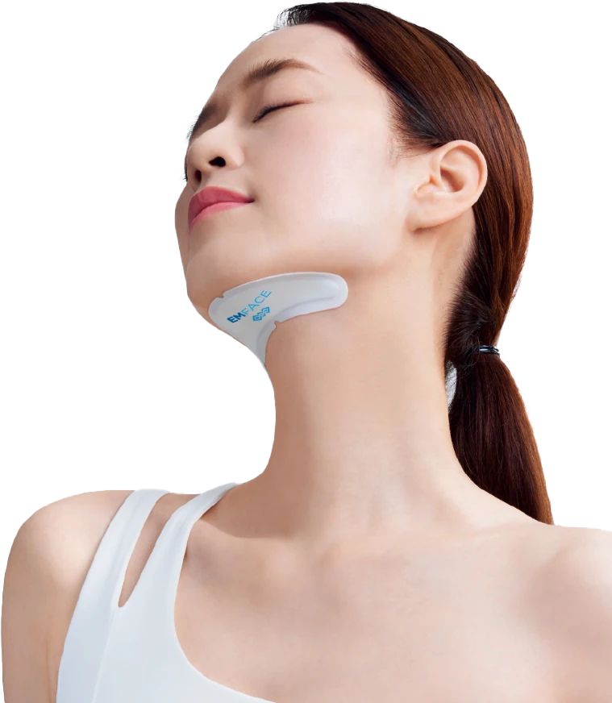
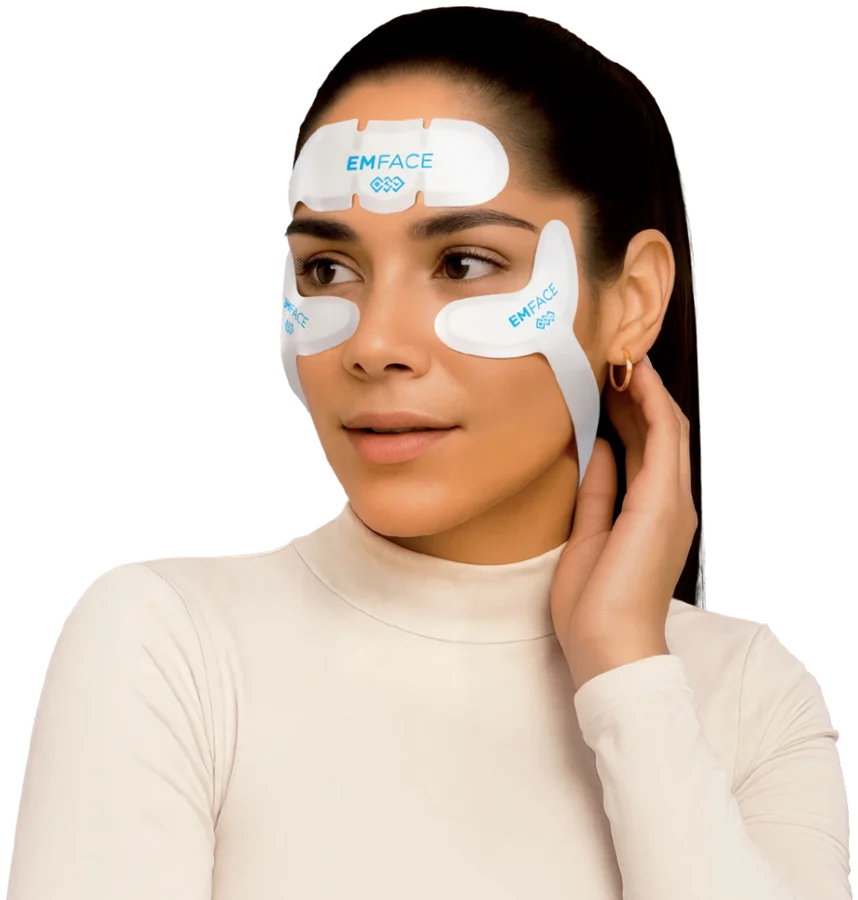

EMFACE Submentum in Penang | Double Chin Treatment
Tighten under the chin and define the jawline without a single needle — physician-supervised BTL EMFACE Submentum at our Gurney Walk clinic in George Town. Synchronised radiofrequency and muscle stimulation lift the skin and tone the muscle beneath the chin, softening a double chin in comfortable 20-minute sessions.


What is EMFACE Submentum?
EMFACE Submentum is the needle-free answer to a double chin. It extends BTL's EMFACE technology to the submental area — the soft tissue beneath the chin — with a hands-free applicator that treats skin and muscle at the same time. Synchronised radiofrequency heats the skin and tissue to stimulate collagen and tighten, while HIFES — high-intensity facial electrical stimulation — contracts and tones the platysma, the broad muscle that supports the jawline and neck.
At CANVAS Medical Clinic in George Town, Penang, EMFACE Submentum suits patients who want a firmer, more defined chin and jawline without injections, fat-dissolving needles or surgery. You simply lie back while the applicator works — and clinical experience with the EMFACE platform reports tighter skin and improved muscle tone over a standard course.
How it works
- Consultation & assessment. Your physician confirms EMFACE Submentum fits your goals — and whether your double chin is mainly fat, skin laxity or muscle tone.
- Applicator placement. A hands-free Submentum applicator is secured beneath the chin; you lie back comfortably.
- Tighten & tone. Synchronised radiofrequency heats the skin for collagen while HIFES contracts and tones the platysma muscle — about 20 minutes.
- Course & results. A typical course is several sessions over a few weeks, with tightening and jawline definition building over the following weeks.
Benefits
Softens a double chin
Tightens under-chin skin and tones muscle to refine the submental profile.
No needles, no surgery
A defined jawline without fat-dissolving injections or incisions.
Skin and muscle together
Radiofrequency for the skin, HIFES for the platysma muscle — in one session.
Sharper jawline
A cleaner chin-to-neck transition for a more youthful profile.
Quick, comfortable sessions
About 20 minutes, hands-free, with no downtime.
Genuine BTL platform
Delivered on authentic EMFACE technology under physician supervision.
Who it's for
EMFACE Submentum may be suitable if you:
- Are bothered by a double chin or fullness under the chin
- Want a more defined jawline without needles or surgery
- Notice early skin laxity along the chin and upper neck
- Are wary of fat-dissolving injections but want visible change
- Prefer a no-downtime treatment that fits a lunch break
- Are building a non-surgical jawline and neck plan
EMFACE Submentum is not suitable with metallic or electronic implants in the treatment area, during pregnancy, or with certain medical conditions. Advanced submental fat or significant laxity may need other approaches — suitability is always confirmed at consultation.

EMFACE Submentum vs other double chin treatments
EMFACE Submentum tightens under-chin skin and tones the platysma muscle with radiofrequency and HIFES — needle-free, no downtime. Fat-dissolving injections chemically break down submental fat but do not tone muscle and can involve swelling. Cryolipolysis (fat freezing) reduces stubborn fat pockets by cooling. For the whole face, EMFACE lifts the forehead, cheeks and jawline.
Mostly muscle tone and skin laxity under the chin: EMFACE Submentum. Mostly a fat pocket: fat-dissolving or cryolipolysis. Many plans combine them, and your CANVAS physician will sequence what your chin and jawline actually need.
Why CANVAS
At CANVAS Medical Clinic, EMFACE Submentum is delivered on genuine BTL technology under physician supervision — with honest assessment of whether needle-free tightening, fat reduction or a combined approach best serves your jawline goals.
We are located at Gurney Walk in the heart of George Town, with covered parking at Gurney Walk and Gurney Plaza. Walk-ins are welcome but we recommend booking in advance.
- LCP-certified physicians plan and supervise every EMFACE Submentum treatment
- Assessment and screening before treatment — honesty before sales
- We'll tell you if fat reduction or another approach suits you better
- Multiple jawline and skin-tightening platforms under one roof
- Central Gurney Walk location with easy covered parking
EMFACE Submentum in Penang, answered.
Care led by our physicians
Your EMFACE Submentum treatment at CANVAS is planned and supervised by qualified, LCP-certified doctors registered with the Malaysian Medical Council — care is never delegated to unsupervised operators. Meet the physicians behind your treatment:
- LCP CertifiedPhysician-led care
- MMC RegisteredQualified doctors
- Genuine SystemsAuthentic & registered
- Open Daily10am – 10pm
Related treatments
Explore other physician-led jawline, skin and rejuvenation treatments at our Gurney Walk clinic in George Town, Penang.
From our patients
Read our reviews on Google →Considering EMFACE Submentum in Penang?
Book a consultation at our Gurney Walk clinic. Our physicians will assess your chin and jawline and design an EMFACE Submentum course that tightens and defines — no needles required.
Reserve a Consultation